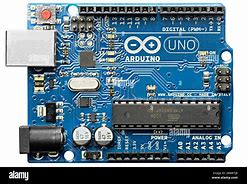

Microcontrolador Específico
En esta página, exploraremos un tipo específico de microcontrolador, sus características y aplicaciones.

Especificaciones Técnicas
| Característica | Valor |
|---|---|
| Modelo | ATmega328 |
| Voltaje de operación | 1.8V - 5.5V |
| Frecuencia | 16 MHz |
| Memoria Flash | 32 KB |
Descripción
El ATmega328 es un microcontrolador de 8 bits que se utiliza comúnmente en proyectos de electrónica y robótica. Su versatilidad y bajo consumo de energía lo hacen ideal para aplicaciones de bajo costo.
